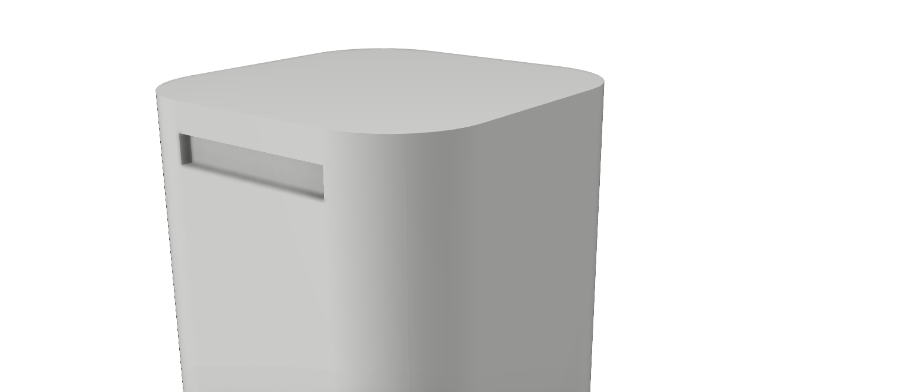

Arquitetura Nerus
Nossa missão foi criar um produto de qualidade que satisfaçam as necessidades de nossos clientes, e ao mesmo tempo ajudem a preservar o meio ambiente.
Todas as peças oferecidas são pré-moldadas para garantir facilidade na montagem para o cliente. 